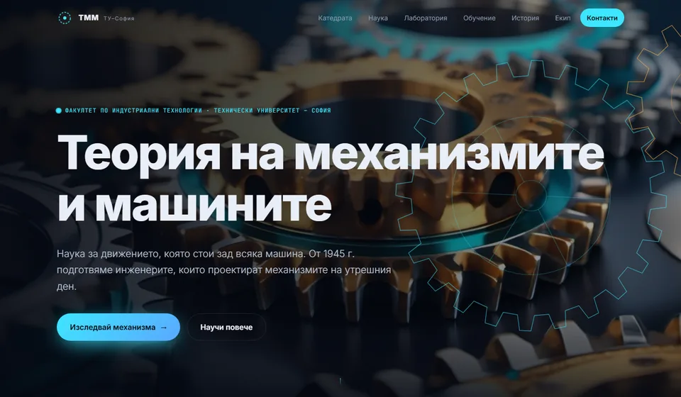

01Първа черноваНеон
Тъмна футуристична тема: циан неонови акценти, частици, наклонени карти, изображения и видео, генерирани в ComfyUI. Включва интерактивна лаборатория.
Най-подходящ за: бърз „уау“ ефект. Най-типичният „шаблонен“ вид от всички.